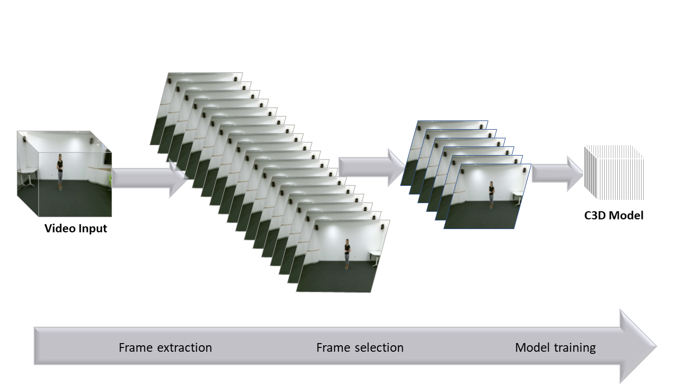

Learning
Cooperative Representation Learning with Self-Supervised Synchronization
 |
In the Deepmind reinforcemen learning environments, the numerical vectors far outperform images as input for general policys, such as PPO. However, there is a natural connection between the images and vectors which are some numerical values representing motions and angles of the robot joint. We leverange this idea to learn an encoder that maps the image to the latent space with self-supervised synchronization of images and vectors. We show that this latent space contains more significant informatin and could be used as input to achieve better performance in reinforcement learning problems. Collaborating with Guangxiang Zhu*, Hao Cheng, advised by Chongjie Zhang. |
Markov Decision Process and Variants: a Survey on Robot Learning
 |
In this survey, I want to summarize approaches in robot reinforcement learning. The survey mainly introduced Markov Decision Process based methods including some variants including partially observable Markov Decision Process, Bayesian learning based POMDP, model predictive control approach and KL divergence upper bound based POMDP. Apart from applying other cutting-edge machine learning and deep learning methods, we can also make use of other control methods such model predictive control in robot learning problems. pdf |
GORA-Net: a Temporal Reparameterization Method for Recognizing Actions in Video Sequences
|  | In this project, our object is video of robots which are making some motions. We need to find out what motion the video actually represents. Interestingly, one essentially same motion may be carried by two videos with different temporal distribution. We try to firstly quotient out the temporal fluctuations of the video, which means to make the sequence play speed at a standard time scale. After that, we build a deep learning framework to learn the motion represented by the video. The temporal reparameterization mapping can be regarded as a hidden layer in the recurrent neural network. pdf slide Collaborating with Sipu Ruan, advised by Gregory Chirikjian. |
Model-free Methods in Policy Search: a Talk
This talk is presented on a seminar at the RL group of Tsinghua University directed by Chongjie Zhang. In this talk, basic idea of reinforcement learning as well as some model-free methods are introduced. Two popular direction of reinforcement learning include policy gradient and weighted maximum likelihood approaches. In addition, model-based policy search method like PILCO is also shown in the talk. slides